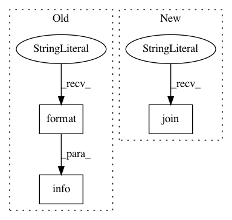

908c0c630a6c7c6e35b7bb0e172d41372bfb309d,python/ray/autoscaler/command_runner.py,SSHCommandRunner,run,#SSHCommandRunner#Any#Any#Any#Any#Any#Any#,291
Before Change
if not isinstance(port_forward, list):
port_forward = [port_forward]
for local, remote in port_forward:
logger.info(self.log_prefix + "Forwarding " +
"{} -> localhost:{}".format(local, remote))
ssh += ["-L", "{}:localhost:{}".format(remote, local)]
final_cmd = ssh + ssh_options.to_ssh_options_list(timeout=timeout) + [
"{}@{}".format(self.ssh_user, self.ssh_ip)
After Change
cli_logger.verbose("Running `{}`", cf.bold(cmd))
with cli_logger.indented():
cli_logger.very_verbose("Full command is `{}`",
cf.bold(" ".join(final_cmd)))
def start_process():
try:
In pattern: SUPERPATTERN
Frequency: 3
Non-data size: 3
Instances
Project Name: ray-project/ray
Commit Name: 908c0c630a6c7c6e35b7bb0e172d41372bfb309d
Time: 2020-07-22
Author: maximsmol@gmail.com
File Name: python/ray/autoscaler/command_runner.py
Class Name: SSHCommandRunner
Method Name: run
Project Name: NifTK/NiftyNet
Commit Name: 696c0bba5172aa702b46e36119cbf73776fcfeee
Time: 2018-11-22
Author: wenqi.li@ucl.ac.uk
File Name: niftynet/engine/handler_model.py
Class Name: ModelRestorer
Method Name: restore_model
Project Name: ray-project/ray
Commit Name: 0ff24ec8dcc4b744981bfd544e70bc748d34c4e4
Time: 2020-06-24
Author: ekhliang@gmail.com
File Name: python/ray/autoscaler/updater.py
Class Name: SSHCommandRunner
Method Name: run